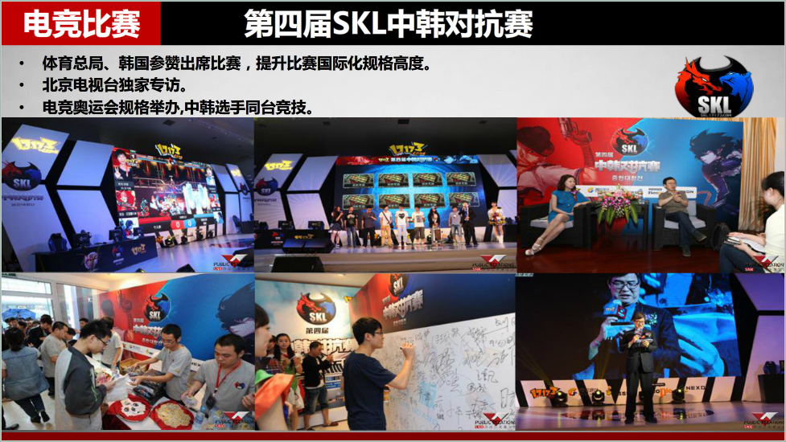

策略与公关服务
以数据分析为基础，以消费者洞察为前提，坚持渠道与内容的有机整合，直接指向有效结果，是SNK做互联网营销的关键与核心所在。为客户提供策略与公关服务，确保品牌故事的准确表达是SNK业务布局的重点方向。
SNK拥有丰富优质的全球化媒体资源、行业垂直媒体资源，与自媒体人、游戏红人、影视剧明星、网络视频自制剧等营销资源建立了长期直接的合作关系，资源强价格低。
服务内容： 整合营销传播策略、媒体关系管理、舆情监测、品牌传播、危机公关、活动管理、社会化营销、事件策划与传播、公益与企业社会责任传播、B2B传播、体育传播、区域传播等
